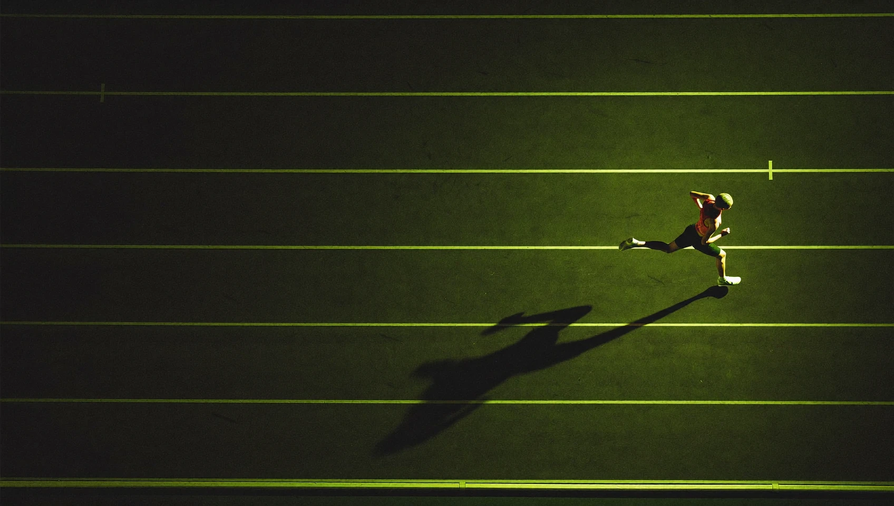

One idea, two runners.
We're both on our school's cross country team, and we see people run with AirPods in all the time. That got us asking: how could we connect mental health and physical fitness?
Music is one of the best things for your mind. Running is one of the best things for your body. But they usually aren't connected. Adagio changes that by matching your music to your running pace.
When your music moves with you, runs feel easier, and it's easier to finish them and enjoy them.